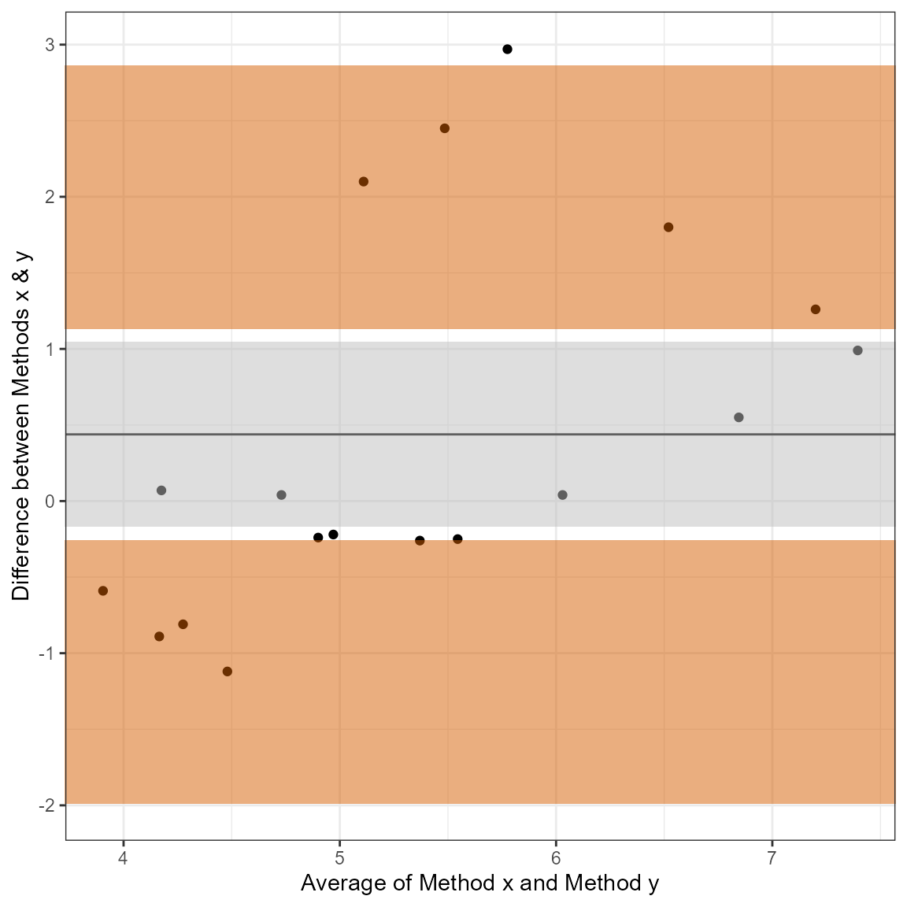
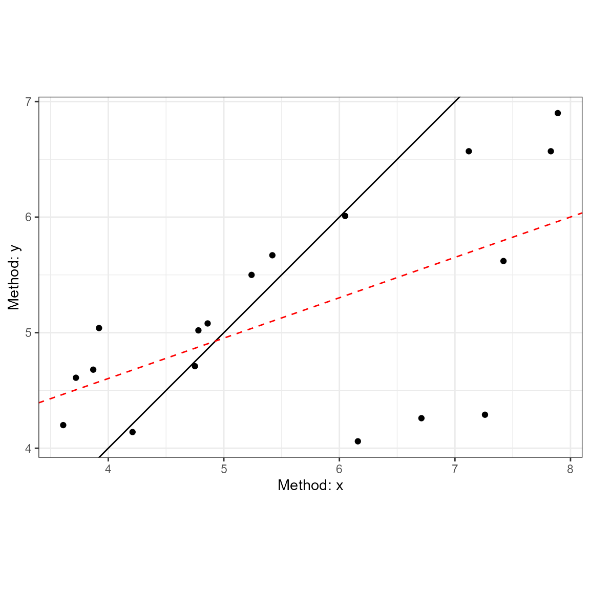
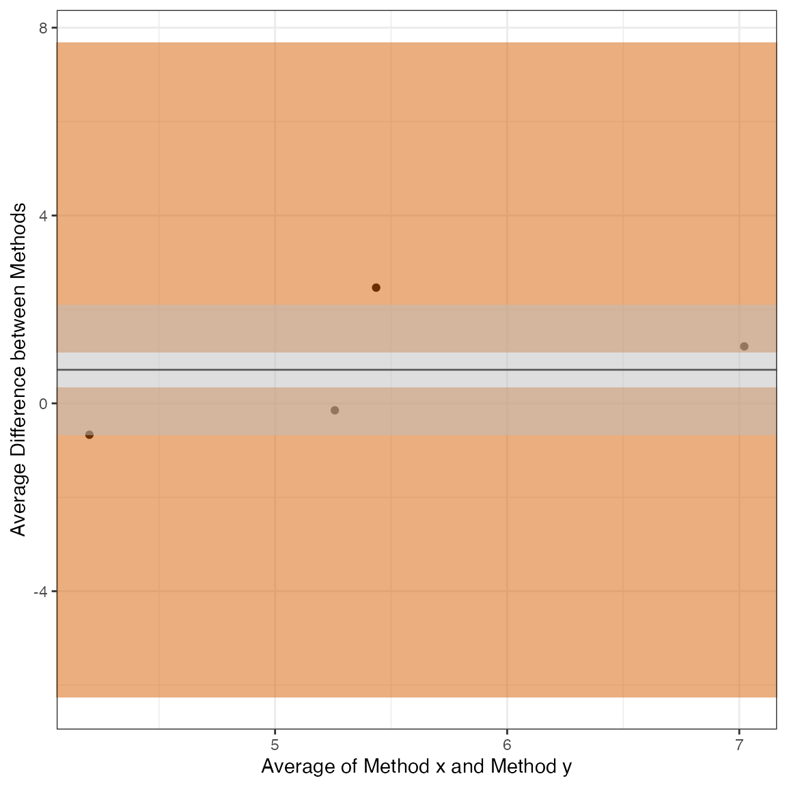
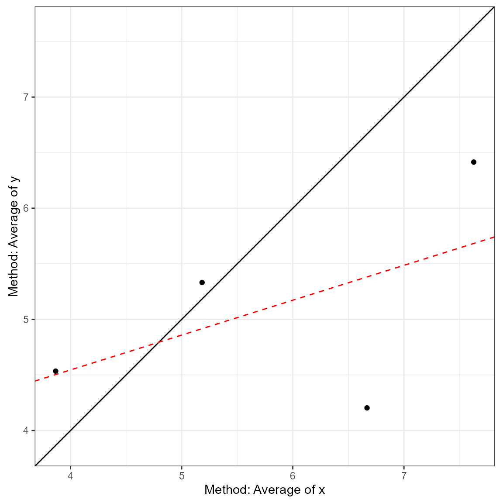
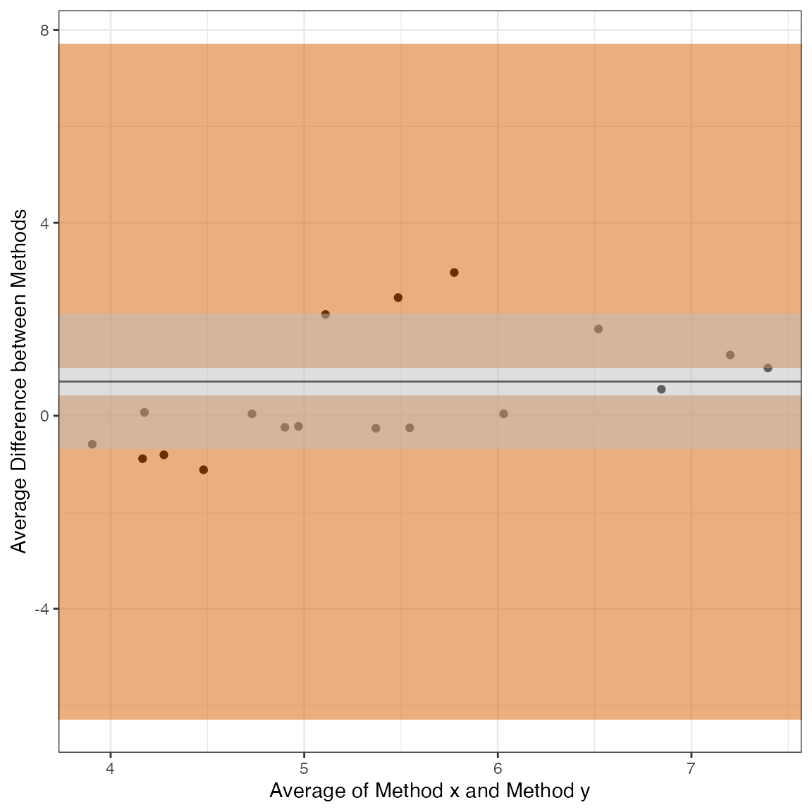
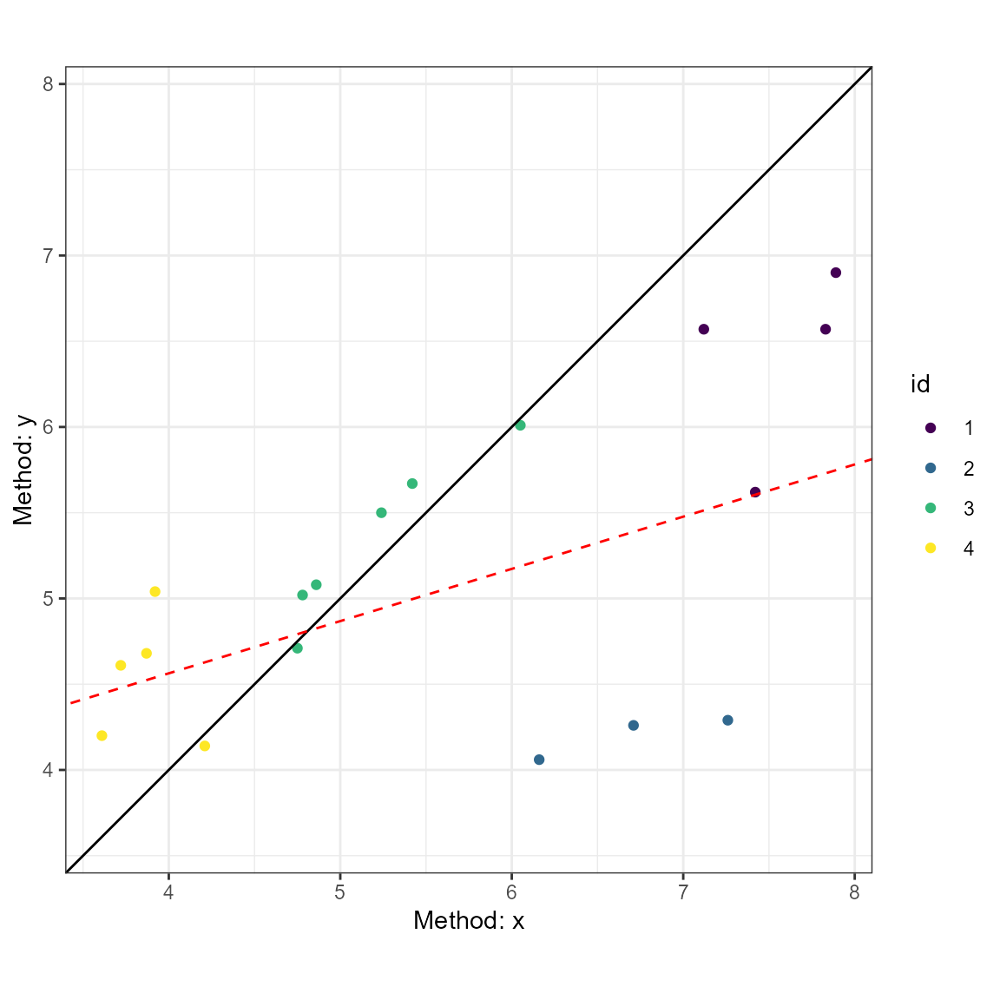
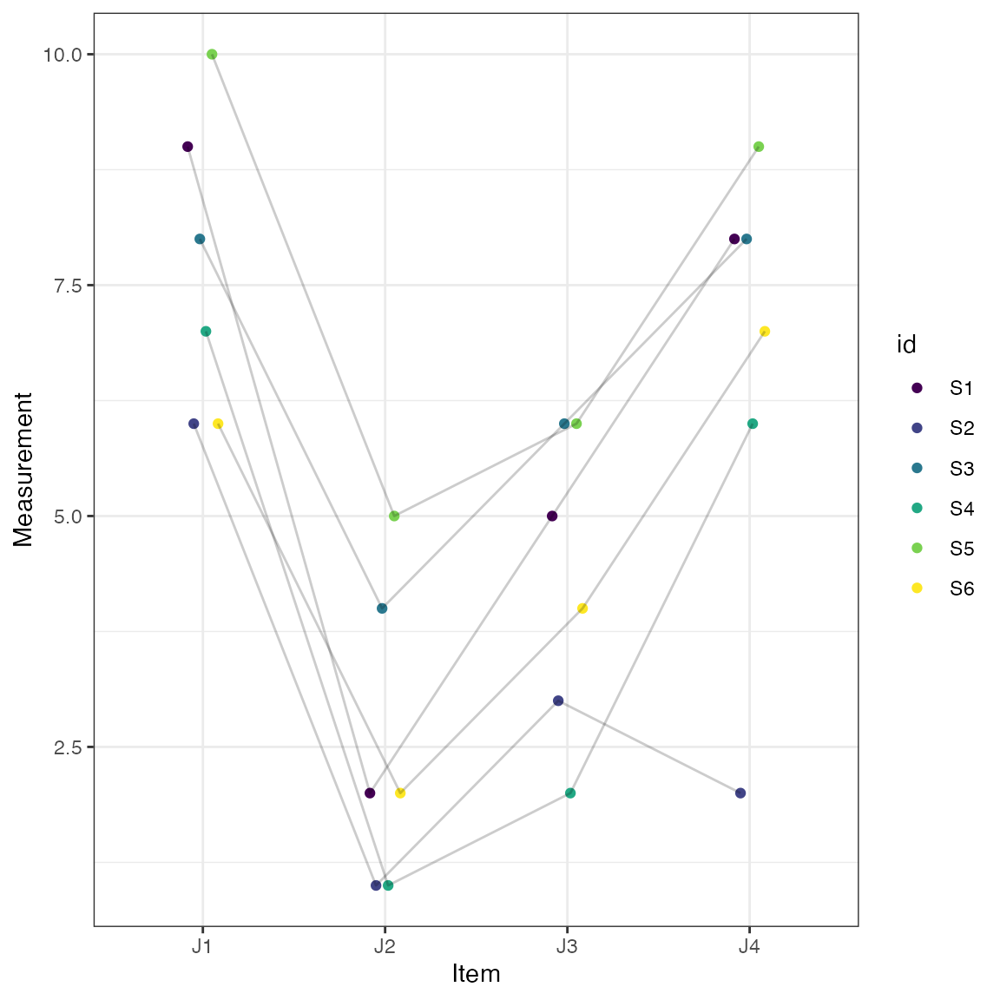
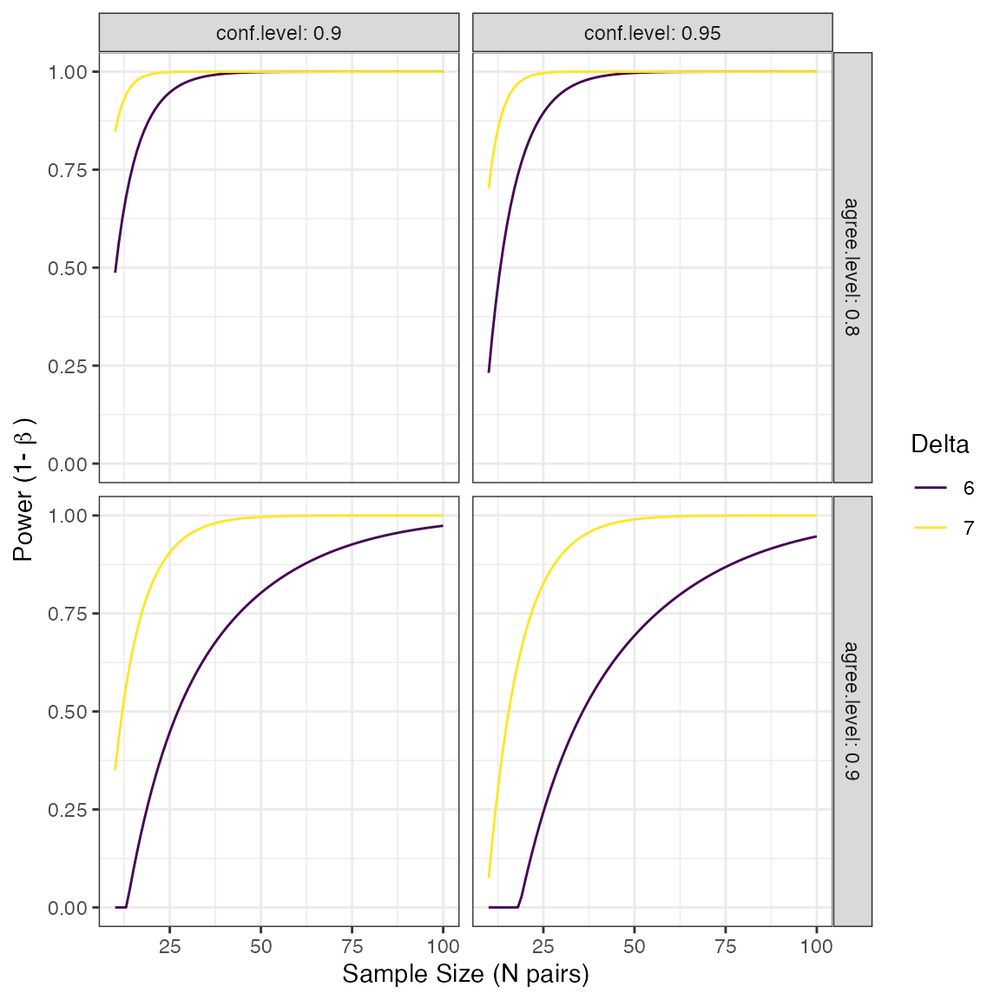

intro_vignette.RmdThe SimplyAgree R package was created to make the process of quantifying measurement agreement, consistency, and reliability. This package expands upon the capabilities of currently available R packages (such as psych and blandr) by 1) providing support for agreement studies that involve multiple observations (agree_test and agree_reps functions) 2) provide robust tests of agreement even in simple studies (shieh_test output from the agree_test function) and 3) a robust set of reliability statistics (reli_stats function).
In this vignette I will shortly demonstrate the implementation of each function and most of the underlying calculations within each function
library(SimplyAgree)
#> Registered S3 methods overwritten by 'tibble':
#> method from
#> format.tbl pillar
#> print.tbl pillaragree_test
In the simplest scenario, a study may be conducted to compare one measure (e.g., x) and another (e.g., y). In this scenario each pair of observations (x and y) are independent; meaning that each pair represents one subject/participant. In most cases we have a degree of agreement that we would deem adequate. This may constitute a hypothesis wherein you may believe the agreement between two measurements is within a certain limit (limits of agreement). If this is the goal then the agree_test function is what you need to use in this package.
The data for the two measurements are put into the x and y arguments. If there is a hypothesized limit of agreement then this can be set with the delta argument (this is optional). Next, the limit of agreement can be set with the agree.level and the confidence level (\(1-\alpha\)). Once those are set the analysis can be run. Please note, this package has pre-loaded data from the Zou 2013 paper. While data does not conform the assumptions of the test it can be used to test out many of the functions in this package. Since there isn’t an a priori hypothesis I will not declare a delta argument, but I will estimate the 95% confidence intervals for 80% limits of agreement.
a1 = agree_test(x = reps$x,
y = reps$y,
agree.level = .8)We can then print the general results. These results include the general parameters of the analysis up top, then the results of the Shieh exact test for agreement (no conclusion is included due to the lack of a delta argument being set). Then the limits of agreement, with confidence limits, are included. Lastly, Lin’s Concordance Correlation Coefficient, another measure of agreement, is also included.
print(a1)
#> Limit of Agreement = 80%
#> alpha = 0.05 | 95 % Confidence Interval
#>
#> ###- Shieh TOST Results -###
#> Exact C.I.: [-1.512, 2.3887]
#> Hypothesis Test: No Hypothesis Test
#>
#> ###- Bland-Altman Limits of Agreement (LoA) -###
#> Mean Bias: 0.4383333 [-0.166885, 1.043552]
#> Lower LoA: -1.121363 [-1.985285, -0.2574405]
#> Upper LoA: 1.998029 [1.134107, 2.861951]
#>
#> ###- Concordance Correlation Coefficient (CCC) -###
#> CCC: 0.4791, 95% C.I. [0.1276, 0.7237]Next, we can use the generic plot function to produce visualizations of agreement. This includes the Bland-Altman plot (type = 1) and a line-of-identity plot (type = 2).
plot(a1, type = 1)
plot(a1, type = 2)
agree_test
The hypothesis test procedure is based on the “exact” approach details by Shieh (2019). In this procedure the null hypothesis (not acceptable agreement) is rejected if the extreme lower bound and upper bound are within the proposed agreement limits. The agreement limits (\(\hat\theta_{EL} \space and \space \hat\theta_{EU}\)) are calculated as the following:
\[ \hat\theta_{EL,EU} = \bar{d} \pm \gamma_{1-\alpha}\cdot \frac{S}{\sqrt{N}} \] wherein \(\bar{d}\) is the mean difference between the two methods, \(S\) is the standard deviation of the sample, \(N\) is the total number of pairs, and _{1-} critical value (which requires a specialized program to estimate).
The reported limits of agreement are derived from the work of Bland and Altman (1986) and Bland and Altman (1999).
\[ LoA = \bar{d} \pm t_{1-\alpha/2,N-1} \cdot \sqrt{\left[\frac{1}{N}+\frac{(z_{1-\alpha/2})^{2}}{2 \cdot (N-1)} \right] \cdot S^2} \] wherein, \(t\) is the critical t-value at the given sample size and confidence level, \(z\) is the value of the normal distribution at the given alpha level, and \(S^2\) is the variance of the difference scores.
The CCC was calculated as outlined by Lin (1989) (with later corrections).
\[ \hat\rho_c = \frac{2 \cdot s_{xy}} {s_x^2 + s_y^2+(\bar x-\bar y)^2} \] where \(s_{xy}\) is the covariance, \(s_x^2\) and \(s_y^2\) are the variances of x and y respectively, and \((\bar x-\bar y)\) is the difference in the means of x & y.
In many cases there are multiple measurements taken within subjects when comparing two measurements tools. In some cases the true underlying value will not be expected to vary (i.e., replicates; agree_reps), or multiple measurements may be taken within an individual and these values are expected to vary (i.e., nested design; agree_nest).
The confidence limits on the limits of agreement are based on the “MOVER” method described in detail by Zou (2011). However, both functions operate similarly to agree_test; the only difference being that the data has to be provided as a data.frame in R.
agree_reps
This function is for cases where the underlying values do not vary within subjects. This can be considered cases where replicate measure may be taken. For example, a researcher may want to compare the performance of two ELISA assays where measurements are taken in duplicate/triplicate.
So, for this function you will have to provide the data frame object with the data argument and the names of the columns containing the first (x argument) and second (y argument) must then be provided. An additional column indicating the subject identifier (id) must also be provided. Again, if there is a hypothesized agreement limit then this could be provided with the delta argument.
a2 = agree_reps(x = "x",
y = "y",
id = "id",
data = reps,
agree.level = .8)The results can then be printed. The printing format is very similar to agree_test, but notice that 1) the hypothesis test is based on the limits of agreement (MOVER method), 2) the Concordance Correlation Coefficient is calculated via the U-statistics method, 3) the Shieh TOST results are missing because they cannot be estimated for this type of design.
print(a2)
#> Limit of Agreement = 80%
#> alpha = 0.05 | 95 % Confidence Interval
#> Replicate Data Points (true value does not vary)
#>
#> Hypothesis Test: No Hypothesis Test
#>
#> ###- Bland-Altman Limits of Agreement (LoA) -###
#> Mean Bias: 0.7152083 [-0.6667193, 2.097136]
#> Lower LoA: -1.211694 [-6.249489, 0.3401676]
#> Upper LoA: 2.642111 [1.090249, 7.679905]
#>
#> ###- Concordance Correlation Coefficient* (CCC) -###
#> CCC: 0.1069, 95% C.I. [-0.1596, 0.3588]
#> *Estimated via U-statistics
plot(a2, type = 1)
plot(a2, type = 2)
agree_nest
This function is for cases where the underlying values may vary within subjects. This can be considered cases where there are distinct pairs of data wherein data is collected in different times/conditions within each subject. An example would be measuring blood pressure on two different devices on many people at different time points/days.
The function works almost identically to agree_reps but the underlying calculations are different
a3 = agree_nest(x = "x",
y = "y",
id = "id",
data = reps,
agree.level = .8)The printed results (and plots) are very similar to agree_reps. However, the CCC result now has a warning because the calculation in this scenario may not be entirely appropriate given the nature of the data.
print(a3)
#> Limit of Agreement = 80%
#> alpha = 0.05 | 95 % Confidence Interval
#> Nested Data Points (true value may vary)
#>
#> Hypothesis Test: No Hypothesis Test
#>
#> ###- Bland-Altman Limits of Agreement (LoA) -###
#> Mean Bias: 0.7100833 [-0.6824145, 2.102581]
#> Lower LoA: -1.162636 [-6.286604, 0.4204924]
#> Upper LoA: 2.582803 [0.9996742, 7.706771]
#>
#> ###- Concordance Correlation Coefficient (CCC) -###
#> CCC: 0.4791, 95% C.I. [0.2429, 0.6616]
#> *Estimated via U-statistics; may be biased
plot(a3, type = 1)
plot(a3, type = 2) ### Calcuations for agree_reps & agree_nest
All the calculations for the limits of agreement in these two functions can be found in the article by Zou (2011).
In addition, the CCC calculations are derived from the cccUst function of the cccrm R package. The mathematics for this CCC calculation can be found in the work of King, Chinchilli, and Carrasco (2007) and Carrasco, King, and Chinchilli (2009).
In some cases, the agreement calculations involve comparing two methods within individuals within varying conditions. For example, the “recpre_long” data set within this package contains two measurements of rectal temperature in 3 different conditions (where there is a fixed effect of condition). For this particular case we can use bootstrapping to estimate the limits of agreement.
The loa_mixed function can then calculate the limits of agreement. Like the previous functions, the data set must be set with the data argument. The diff is the column which contains the difference between the two measurements. The condition is the column that indicates the different conditions that the measurements were taken within. The id is the column containing the subject/participant identifier. The plot.xaxis, if utilized, sets the column from which to plot the data on the x-axis. The final two arguments replicates and type set the requirements for the bootstrapping procedure. Warning: This is a computationally heavy procedure and may take a few minutes to complete. An example code can be seen below.
a4 = loa_mixed(data = recpre_long,
diff = "diff",
condition = "trial_condition",
id = "id",
plot.xaxis = "AM",
replicates = 199,
type = "perc")Another feature of this R package is the ability to estimate the reliability of a measurement. This R package allows for the calculation of Intraclass Correlation Coefficients (ICC), various standard errors (SEM, SEE, and SEP), and coefficient of variation. All of the underlying calculations (sans the coefficient of variation) is based on the paper by Weir (2005). This is a fairly popular paper within my own field (kinesiology), and hence was the inspiration for creating this function that provides all the calculative approaches included within that manuscript.
For this package, the test-retest reliability statistics can be calculated with the reli_stats function. This function allow for data to be input in a long (multiple rows of data for each subject) or in wide (one row for each subject but a column for each item/measure).
For the long data form, the column containing the subject identifier (id), item number (item), and measurements (measure) are provided. In this function I refer to items similar to if we were measuring internal consistency for a questionnaire (which is just a special case of test-retest reliability). So, item could also be refer to time points, which is what is typically seen in human performance settings where test-retest reliability may be evaluated over the course of repeated visits to the same laboratory. If wide is set to TRUE then the columns containing the measurements are provided (e.g., c("value1","value2","value3")).
To demonstrate the function, I will create a data set in the wide format.
sf <- matrix(
c(9, 2, 5, 8,
6, 1, 3, 2,
8, 4, 6, 8,
7, 1, 2, 6,
10, 5, 6, 9,
6, 2, 4, 7),
ncol = 4,
byrow = TRUE
)
colnames(sf) <- paste("J", 1:4, sep = "")
rownames(sf) <- paste("S", 1:6, sep = "")
#sf #example from Shrout and Fleiss (1979)
dat = as.data.frame(sf)Now, that we have a data set (dat), I can use it in the reli_stats function.
test1 = reli_stats(
data = dat,
wide = TRUE,
col.names = c("J1", "J2", "J3", "J4")
)This function also has generic print and plot functions. The output from print provides the coefficient of variation, standard errors, and a table of various intraclass correlation coefficients. Notice the conclusions about the reliability of the measurement here would vary greatly based on the statistic being reported. What statistic you should report is beyond the current vignette, but is heavily detailed in Weir (2005). However, within the table there are columns for model and measures which describe the model that is being used and the what these different ICCs are intended to measure, respectively.
print(test1)
#>
#> Coefficient of Variation (%): 15.36
#> Standard Error of Measurement (SEM): 1.0097
#> Standard Error of the Estimate (SEE): 2.6245
#> Standard Error of Prediction (SEP): 4.065
#>
#> Intraclass Correlation Coefficients
#> model measures type icc lower.ci upper.ci
#> 1 one-way random Agreement ICC1 0.1657 -0.09672 0.6434
#> 2 two-way random Agreement ICC2 0.2898 0.04290 0.6911
#> 3 two-way fixed Consistency ICC3 0.7148 0.41184 0.9258
#> 4 one-way random Avg. Agreement ICC1k 0.4428 -0.54504 0.8783
#> 5 two-way random Avg. Agreement ICC2k 0.6201 0.15204 0.8995
#> 6 two-way fixed Avg. Consistency ICC3k 0.9093 0.73690 0.9804Also included in the results is a plot of the measurements across the items (e.g., time points).
plot(test1)
There are surprisingly few resources for planning a study that attempts to quantify agreement between two methods. Therefore, we have added one function, with hopefully more in the future, to aid in the power analysis for simple agreement studies. The current function is blandPowerCurve which constructs a “curve” of power across sample sizes, agreement levels, and confidence levels. This is based on the work of Lu et al. (2016).
For this function the user must define the hypothesized limits of agreement (delta), mean difference between methods (mu), and the standard deviation of the difference scores (SD). There is also the option of adjusting the range of sample size (default: seq(10,100,1) which is 10 to 100 by 1), the agreement level (default is 95%), and confidence level (default is 95%). The function then produces a data frame of the results. A quick look at the head and we can see that we have low statistical power when the sample size is at the lower end of the range.
power_res <- blandPowerCurve(
samplesizes = seq(10, 100, 1),
mu = 0.5,
SD = 2.5,
delta = c(6,7),
conf.level = c(.90,.95),
agree.level = c(.8,.9)
)
head(power_res)
#> N mu SD delta power agree.level conf.level
#> 1 10 0.5 2.5 6 0.4870252 0.8 0.9
#> 2 11 0.5 2.5 6 0.5624800 0.8 0.9
#> 3 12 0.5 2.5 6 0.6262736 0.8 0.9
#> 4 13 0.5 2.5 6 0.6802613 0.8 0.9
#> 5 14 0.5 2.5 6 0.7260286 0.8 0.9
#> 6 15 0.5 2.5 6 0.7649104 0.8 0.9We can then find the sample size at which (or closest to which) a desired power level with the find_n method for powerCurve objects created with the function above.
find_n(power_res, power = .8)
#> # A tibble: 8 x 5
#> delta conf.level agree.level power N
#> <dbl> <dbl> <dbl> <dbl> <dbl>
#> 1 6 0.9 0.8 0.798 16
#> 2 6 0.9 0.9 0.802 50
#> 3 6 0.95 0.8 0.798 20
#> 4 6 0.95 0.9 0.802 63
#> 5 7 0.9 0.8 0.847 10
#> 6 7 0.9 0.9 0.800 19
#> 7 7 0.95 0.8 0.775 11
#> 8 7 0.95 0.9 0.806 24Additionally we can plot the power curve to see how power changes over different levels of delta, agree.level, and conf.level
plot(power_res)
Bland, J. Martin, and DouglasG. Altman. 1986. “STATISTICAL METHODS FOR ASSESSING AGREEMENT BETWEEN TWO METHODS OF CLINICAL MEASUREMENT.” The Lancet 327 (8476): 307–10. https://doi.org/10.1016/s0140-6736(86)90837-8.
Bland, J Martin, and Douglas G Altman. 1999. “Measuring Agreement in Method Comparison Studies.” Statistical Methods in Medical Research 8 (2): 135–60. https://doi.org/10.1177/096228029900800204.
Carrasco, Josep L., Tonya S. King, and Vernon M. Chinchilli. 2009. “The Concordance Correlation Coefficient for Repeated Measures Estimated by Variance Components.” Journal of Biopharmaceutical Statistics 19 (1): 90–105. https://doi.org/10.1080/10543400802527890.
King, Tonya S., Vernon M. Chinchilli, and Josep L. Carrasco. 2007. “A Repeated Measures Concordance Correlation Coefficient.” Statistics in Medicine 26 (16): 3095–3113. https://doi.org/10.1002/sim.2778.
Lin, Lawrence I-Kuei. 1989. “A Concordance Correlation Coefficient to Evaluate Reproducibility.” Biometrics 45 (1): 255. https://doi.org/10.2307/2532051.
Lu, Meng-Jie, Wei-Hua Zhong, Yu-Xiu Liu, Hua-Zhang Miao, Yong-Chang Li, and Mu-Huo Ji. 2016. “Sample Size for Assessing Agreement Between Two Methods of Measurement by Bland-Altman Method.” The International Journal of Biostatistics 12 (2). https://doi.org/10.1515/ijb-2015-0039.
Shieh, Gwowen. 2019. “Assessing Agreement Between Two Methods of Quantitative Measurements: Exact Test Procedure and Sample Size Calculation.” Statistics in Biopharmaceutical Research 12 (3): 352–59. https://doi.org/10.1080/19466315.2019.1677495.
Weir, Joseph P. 2005. “Quantifying Test-Retest Reliability Using the Intraclass Correlation Coefficient and the SEM.” The Journal of Strength and Conditioning Research 19 (1): 231. https://doi.org/10.1519/15184.1.
Zou, GY. 2011. “Confidence Interval Estimation for the BlandAltman Limits of Agreement with Multiple Observations Per Individual.” Statistical Methods in Medical Research 22 (6): 630–42. https://doi.org/10.1177/0962280211402548.